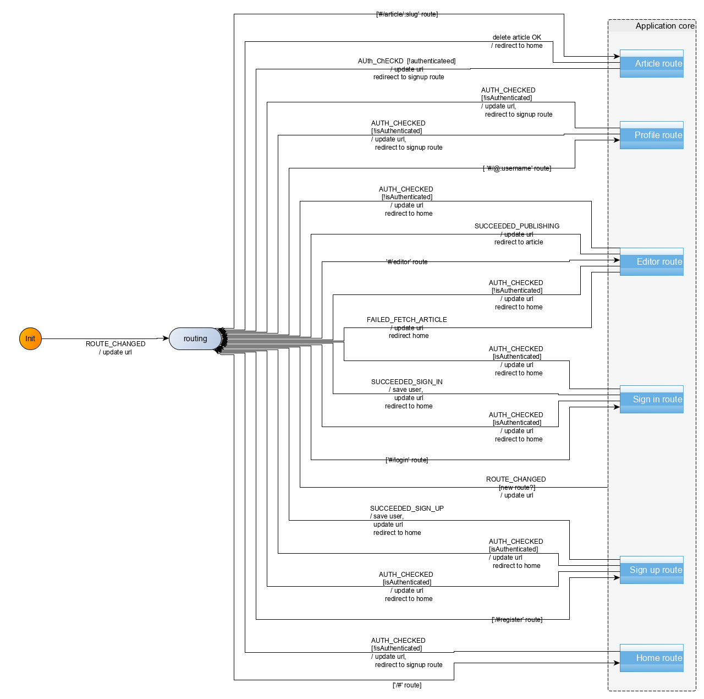
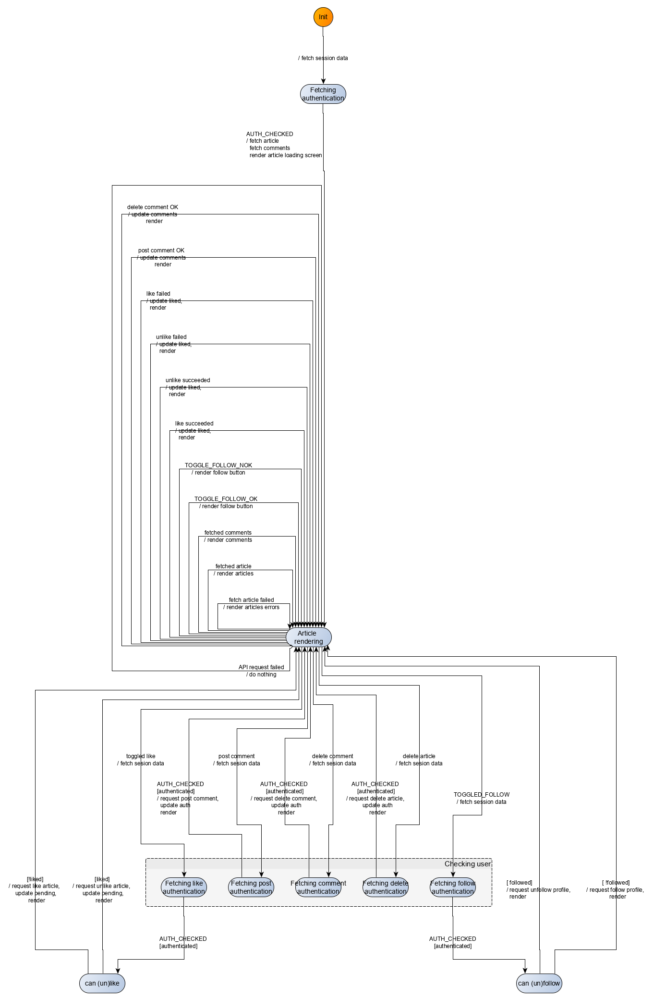

Article route
In this section, we will modelize and implement the user flows related to the Article route. In that route, the navigating user can view an article’s content. If the navigating user is also the article’s author, he can edit or delete the article. Otherwise, he can follow the article’s author and like/unlike the article. In all cases, the navigating user can additionally post comments about the article, and can delete the comments he posted.
An example of article route is as follows: /#/article/real-worl-editor-9zlwb7.
The user does not need to be authenticated to access the Article route. However, if the user tries to follow or like/unlike an article’s author, he will be redirected to the Sign-up route. Additionally, if the user is not authenticated, he cannot post comments.
UI
We already have identified the screens in the Specifications section. Ler’s remind them here:
| Route | State | Main screen |
|---|---|---|
#/article/real-world-is-cool-dtp7j9 |
Not authenticated, article chosen |  |
#/article/real-world-is-cool-dtp7j9 |
Authenticated, article chosen, not my article |  |
#/article/desktop-game-editor-...-soioli |
Authenticated, article chosen, my article, comment posted |  |
The UI for the Article route will be implemented with an Article Svelte component. The full source code for the Article component can be accessed in the repository.
UI testing
As before, we test the UI with Storybook. The corresponding stories are available in the source repository.
Commands
We have the following commands for the Article route (some of which also being used for the User Profile route):
| Command | Command parameters | Description |
|---|---|---|
REDIRECT |
hash to redirect to | redirects the user to a new/same hash location |
FETCH_AUTHENTICATION |
— | fetches user session data if any |
FETCH_ARTICLE |
slug | sends an API request to the Get Article endpoint |
FETCH_COMMENTS |
slug | sends an API request to the Get Comments from an Article endpoint |
DELETE_COMMENT |
slug, comment id | sends an API request to the Delete Comment endpoint |
POST_COMMENT |
slug, comment to post | sends an API request to the Add Comments to an Article endpoint |
DELETE_ARTICLE |
slug | sends an API request to the Delete Article endpoint |
FAVORITE_ARTICLE |
article slug | sends an API request to like an article |
UNFAVORITE_ARTICLE |
article slug | sends an API request to unlike an article |
FOLLOW_PROFILE |
username | sends an API request to the Follow user endpoint |
UNFOLLOW_PROFILE |
username | sends an API request to the Unfollow user endpoint |
Commands implementation
The REDIRECT, FETCH_AUTHENTICATION, FETCH_ARTICLE, FAVORITE_ARTICLE, UNFAVORITE_ARTICLE, FOLLOW_PROFILE, UNFOLLOW_PROFILE, have already been written when implementing the User profile route. For the rest of commands, we defer to the API passed on through effect handlers:
[FETCH_COMMENTS]: (dispatch, params, effectHandlers) => {
const { fetchComments } = effectHandlers;
const slug = params;
fetchComments({ slug })
.then(({ comments }) => dispatch({ [FETCH_COMMENTS_OK]: comments }))
.catch(err => dispatch({ [FETCH_COMMENTS_NOK]: err }));
},
[DELETE_COMMENT]: (dispatch, params, effectHandlers) => {
const { deleteComment } = effectHandlers;
const {slug, id} = params;
deleteComment({ slug, id })
.then(({ profile }) => dispatch({ [DELETE_COMMENTS_OK]: void 0 }))
.catch(err => dispatch({ [DELETE_COMMENTS_NOK]: err }));
},
[POST_COMMENT]: (dispatch, params, effectHandlers) => {
const { createComment } = effectHandlers;
const {slug, comment} = params;
createComment({ slug, comment})
.then(({ comment }) => dispatch({ [POST_COMMENTS_OK]: comment }))
.catch(err => dispatch({ [POST_COMMENTS_NOK]: err }));
},
[DELETE_ARTICLE]: (dispatch, params, effectHandlers) => {
const { deleteArticle } = effectHandlers;
const slug = params;
deleteArticle({ slug })
.then(({ profile }) => dispatch({ [DELETE_ARTICLE_OK]: profile }))
.catch(err => dispatch({ [DELETE_ARTICLE_NOK]: err }));
},Events
We have the following events for the Article route:
| Event | Event data | Occurs when |
|---|---|---|
ROUTE_CHANGED |
hash | direct href linking or redirection for authentication |
AUTH_CHECKED |
user | user session data is retrieved |
FETCHED_ARTICLE |
article data | API response to a Get profile request |
FAILED_FETCH_ARTICLE |
— | API response to a Get profile request |
FETCH_COMMENTS_OK |
comments | API error response to a Get profile request |
FETCH_COMMENTS_NOK |
— | API error response to a Get profile request |
DELETE_COMMENTS_OK |
— | comment is successfully deleted |
DELETE_COMMENTS_NOK |
— | comment is not successfully deleted |
POST_COMMENTS_OK |
created comment (with id) | comment is successfully posted |
POST_COMMENTS_NOK |
— | comment is not successfully posted |
DELETE_ARTICLE_OK |
— | article is successfully deleted |
DELETE_ARTICLE_NOK |
— | article is not successfully deleted |
FAVORITE_OK |
article and slug data | article was successfully liked by the user |
FAVORITE_NOK |
error and slug data | user failed to like the article |
UNFAVORITE_OK |
article and slug data | article was successfully unliked by the user |
UNFAVORITE_NOK |
error and slug data | user failed to unlike the article |
TOGGLE_FOLLOW_OK |
profile data | user successfully followed/unfollowed a profile |
TOGGLE_FOLLOW_NOK |
err and profile data | user failed to follow/unfollow a profile |
CLICKED_DELETE_ARTICLE |
article’s slug | user clicks the delete article button |
CLICKED_CREATE_COMMENT |
article’s slug and comment | user clicks on the Post comment button |
CLICKED_DELETE_COMMENT |
article’s slug and unique id of the comment | user clicks on the Trash icon in the lower right corner of a comment |
UPDATED_COMMENT |
comment | user modifies the content of the comment text area |
TOGGLED_FAVORITE |
article’s slug and whether the article is favorited at the moment of the toggling | user clicks to like or unlike an article |
TOGGLED_FOLLOW |
username to follow | user clicks to follow or unfollow a user |
Behaviour modelization
The modelization we reach is the following:

Zooming in on the Article route compound control state:

Refactor
We used an API_REQUEST_FAILED event gathering failure for some API requests for which we have the same failure processing: post comment, delete article, delete comments, fetch comments. As a matter of fact, if any of these three API calls fail, we just ignore that failure. We do not include however in that list the fetch article API call, as we think it is important to show, in that case, some message to the user to indicate that something went wrong fetching the article. Similarly, the follow/unfollow and like/unlike feature are also excluded from the list, as the corresponding button is re-enabled in case of request failure. The API_REQUEST_FAILED event thus replaces the following events: POST_COMMENTS_NOK, DELETE_ARTICLE_NOK, DELETE_ARTICLE_NOK, FETCH_COMMENTS_NOK.
Our second refactor had us isolating the common path structure describing the execution of an API which requires user authentication. Here, the following features require authentication: post comment, delete article, delete comments, like/unlike article, follow/unfollow user. The common structure then goes as follows:

The parameters (trigger, cond, API call, Start, Next, Fallback, fallback) allow us to fully specify the sought-out behavior.
User scenarios test
As before, we pick our user scenarios to fulfill the all-transitions coverage criteria.
In our main cases, we distinguish between unauthenticated users:
| Subset | Event sequence |
|---|---|
| not authenticated, like article | fetched article, like article, is redirected to sign up |
| not authenticated, follow profile | fetched article, follow profile, is redirected to sign up |
and authenticated users:
| Subset | Event sequence |
|---|---|
| authenticated, like article | fetched article, like article, like successful |
| authenticated, unlike article | fetched article, unlike article, unlike successful |
| authenticated, follow profile | fetched article, follow profile, follow successful |
| authenticated, unfollow profile | fetched article, unfollow profile, unfollow successful |
| authenticated, post comment | fetched article, post comment, post successful |
| authenticated, delete comment | fetched article, delete comment, delete successful |
| authenticated, delete article | fetched article, delete article, delete successful, is redirected to Home route |
Additionally, our edge cases are as follows:
| Subset | Event sequence |
|---|---|
| not authenticated, article does not exist | article fetch fails |
| authenticated, post comment | fetched article, post comment, post unsuccessful |
| authenticated, delete comment | fetched article, delete comment, delete unsuccessful |
| authenticated, delete article | fetched article, delete article, delete unsuccessful |
| authenticated, like/unlike article | fetched article, like article, like unsuccessful |
| authenticated, follow/unfollow profile | fetched article, follow profile, follow unsuccessful |
Behaviour implementation
The implementation (src/behaviour/article.js) derives directly from the modelization. We reproduce here the main part which are the transitions:
export const articleTransitions = [
{
from: "article",
event: INIT_EVENT,
to: "fetching-auth-for-article",
action: fetchAuthentication
},
{
from: "fetching-auth-for-article",
event: AUTH_CHECKED,
to: "article-rendering",
action: fetchArticleCommentsAndInitialRender
},
{
from: "article-rendering",
event: UPDATED_COMMENT,
to: "article-rendering",
action: renderUpdatedComment
},
{
from: "article-rendering",
event: FETCHED_ARTICLE,
to: "article-rendering",
action: renderFetchedArticle
},
{
from: "article-rendering",
event: FAILED_FETCH_ARTICLE,
to: "article-rendering",
action: renderFailedFetchArticle
},
{
from: "article-rendering",
event: FETCH_COMMENTS_OK,
to: "article-rendering",
action: renderFetchedComments
},
{
from: "article-rendering",
event: TOGGLE_FOLLOW_OK,
to: "article-rendering",
action: renderToggledFollow
},
{
from: "article-rendering",
event: TOGGLE_FOLLOW_NOK,
to: "article-rendering",
action: renderFailedToggledFollow
},
{
from: "article-rendering",
event: FAVORITE_OK,
to: "article-rendering",
action: renderFavoritedArticle
},
{
from: "article-rendering",
event: FAVORITE_NOK,
to: "article-rendering",
action: renderFailedFavoriteArticle
},
{
from: "article-rendering",
event: UNFAVORITE_OK,
to: "article-rendering",
action: renderUnfavoritedArticle
},
{
from: "article-rendering",
event: UNFAVORITE_NOK,
to: "article-rendering",
action: renderFailedUnfavoriteArticle
},
{
from: "article-rendering",
event: POST_COMMENT_OK,
to: "article-rendering",
action: renderPostedComment
},
{
from: "article-rendering",
event: DELETE_COMMENT_OK,
to: "article-rendering",
action: renderDeletedComment
},
{
from: "article-rendering",
event: API_REQUEST_FAILED,
to: "article-rendering",
action: renderFailedApiRequest
},
getAuthedApiPartialMachine({
states: { fetching: "fetching-auth-for-like", next: "can-like" },
events: { trigger: TOGGLED_FAVORITE },
actions: { call: updateAuth }
}),
getAuthedApiPartialMachine({
states: { fetching: "fetching-auth-for-follow", next: "can-follow" },
events: { trigger: TOGGLED_FOLLOW },
actions: { call: updateAuth }
}),
getAuthedApiPartialMachine({
states: { fetching: "fetching-auth-for-post-comment", next: "article-rendering" },
events: { trigger: CLICKED_CREATE_COMMENT },
actions: { call: postCommentUpdateAuthAndRender }
}),
getAuthedApiPartialMachine({
states: { fetching: "fetching-auth-for-delete-comment", next: "article-rendering" },
events: { trigger: CLICKED_DELETE_COMMENT },
actions: { call: deleteCommentUpdateAuthAndRender }
}),
getAuthedApiPartialMachine({
states: { fetching: "fetching-auth-for-delete-article", next: "article-rendering" },
events: { trigger: CLICKED_DELETE_ARTICLE },
actions: { call: deleteArticleUpdateAuthAndRender }
}),
{
from: "can-like", event: void 0, guards: [
{ predicate: isArticleLiked, to: "article-rendering", action: unlikeArticleAndRender },
{ predicate: not(isArticleLiked), to: "article-rendering", action: likeArticleAndRender },
]
},
{
from: "can-follow", event: void 0, guards: [
{ predicate: isProfileFollowed, to: "article-rendering", action: unfollowProfileAndRender },
{ predicate: not(isProfileFollowed), to: "article-rendering", action: followProfileAndRender },
]
},
{ from: "article-rendering", event: DELETE_ARTICLE_OK, to: "routing", action: redirectToHome },
{ from: "article", event: ROUTE_CHANGED, to: "routing", action: updateURL }
].flat();Summary
We implemented the Article route of our Conduit clone demo application. We recognized recurring behavior patterns and abstracted them to compose the machine modelizing the route’s behavior.